A project about New Zealand culture, entertainment and arts.
2/8/2020
Studio VI has been a mildly shaky, yet controlled journey so far. I’m still in the early planning stages where I allow
myself to explore around my selected topic and see where the best direction to move in is. I knew going in that I wanted
to explore locally made content, and perhaps see if I could increase peoples engagement in it.
I began working with this, setting up some research forms etc. and getting some input from my TA, Charles. I realised shortly after our conversation that,
ironically, I wasn’t engaging well with the engagement topic (basically, I was getting super bored).
I ended up talking with Charles again the next day and we decided that I could look at past locally produced content,
due to the fact id been enjoying combing through the NZOnScreen online archives, and maybe do some circuit bending,
something I’ve been wanting to do for a while, and Charles has some experience in. Building off that, I decided that I could look at 'forgotten media',
content that was broadcast and enjoyed at the time, but hasn't quite made created a cultural legacy.
I came up with a quick pitch, which could make a good "why": In a world/society of rapid-fire media consumption, take some time to look back at things that slipped through the cracks.
I had the idea of seeing what kinds of random old content I could find in opshops etc. and seeing what I could do with that data.
I leave you with my favourite random discovery of NZs broadcast television past: Count Homogenized, a strangely camp vampire with an insatiable thirst for… milk?
18/8/2020
The past two weeks have been interesting to say the least. I launched off Charles’ critiques and actually went back to a scrapped idea I’d had previously. One of the my motivations to do a project like this was a brief obsession with 2007 after-school New Zealand television, and I had an idea to build a TV that simulates watching television in 2007, to create some sort of nostalgia.
The reason for scrapping it was due to the specificity of the experience: it was nostalgic for me, and maybe some people in my age group, but not for everyone. Nostalgia, as noted by both myself and Charles, is also a difficult concept to work with.
I took this old concept and twisted it a little bit. Instead of strictly 2007, I could dig up TV shows and movies from any era, which would expand the effectiveness of the project by appealing to a much wider audience.
Instead of Nostalgia, I started looking into the concept of involuntary memories – when a memory previously buried in the depths of ones mind is brought out through a trigger. The goal is to trigger the surfacing of these memories by playing random, obscure TV/Movies, controlled through the channel buttons of a second-hand TV. I found some decent readings about the concept, but, as always, I’m a practical worker, so I got started on tech stuff pretty quickly.
I quickly planned what tech I would use. I wanted the unit to be self-contained with no laptop involved, so I opted to use a Raspberry Pi I had lying around. This has the advantage of being able to play media files while being controlled through I/O pins. I spent a few days getting the Pi up and running, but then disaster struck.
Yeah, COVID again. Auckland went into a level 3 lockdown, and I had left the Pi and all the rest of my equipment in studio, and I haven’t been able to access it since. Its unknown when I will be able to return to studio. We’ll find out on Friday, but if lockdown is extended significantly, I may have to change the entire project, as it was so practical and required a bit of op-shopping to collect the media and some component/TV shopping as well. So yeah, not looking great at the moment, but we hopefully will be freed sometime soon.
24/8/2020
Things don’t seem to be improving with the COVID19 situation so I’ve been continuing to do what I can. Without access to the Raspberry Pi I can’t really do all that much, so I tried setting up a virtual machine to run the Pi OS, without much luck unfortunately. Ultimately, even a virtual machine wouldn’t work for prototyping as it lacks access to the I/O pins.
Simultaneously I spent some time experimenting with ways to do all the code. I got it working with my old favourite Processing, but it was really slow, and I’m not sure if it would work on the Pi.
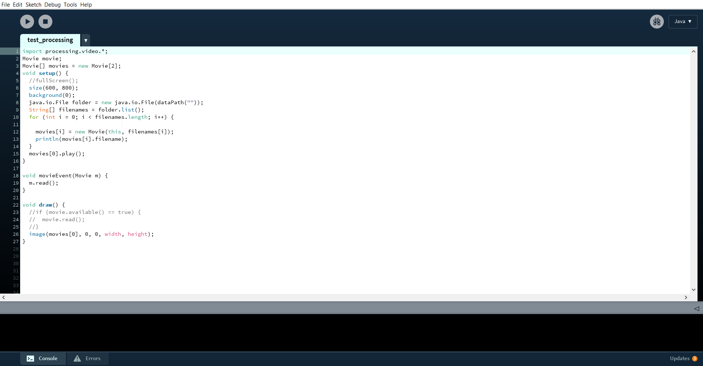
I then tried using Python, as I know this works on the Pi. I tried controlling VLC using Python, and had a bit of success running it in the command line, but struggled when making a .py file.
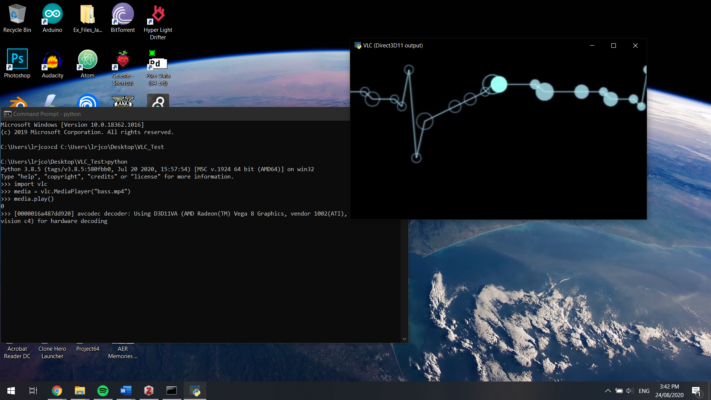
Techno-babble aside, I have a new way of doing it that will probably work using batch commands, but I need access to my equipment, trying to work without it isn’t going to work and goes against my personal goals for the project, to tinker and experiment. I am going to try and organise a rescue mission as lockdown has just been slightly extended. I need to prepare for the worst-case-scenario in order for the project to be a success.
I also had a critique session last week, where I basically showcased all the progress I’ve discussed here. Feedback was generally good, although I felt I struggled to communicate my ideas very well.
I had answers for every question asked of me, which means I’ve comprehensively thought things through, which certainly hasn’t been the case for critiques I’ve done in the past.
16/9/2020
A large recap unfortunately. I’ve been working really hard on almost exclusively studio, which means I’ve managed to get a lot done. A week after my last post Auckland was brought down to a lower COVID alert level and I was able to access studio.
I headed in and cleared absolutely everything off my desk, and also managed to consult Krishna, our mechatronics lab technician about connecting wires reliably to the GPIO pins, who recommended just buying some premade wires from Jaycar (my previous plan was to build and crimp my own).
I swung by Jaycar on the way home and grabbed the required materials, and finally set up my Raspberry Pi workstation using stuff from around the house.
I began by setting up some buttons on a breadboard and getting basic inputs working on a python script, which was really easy to do.
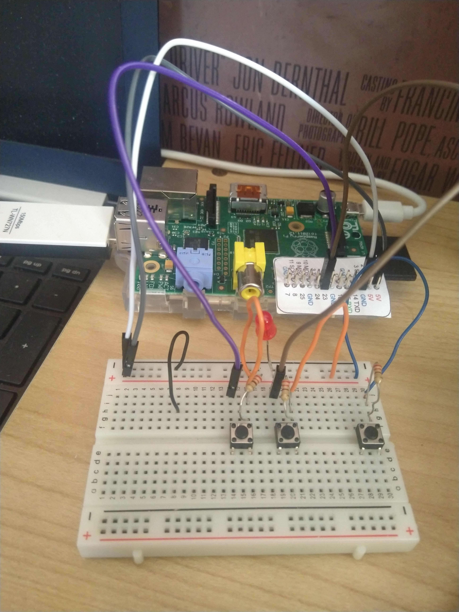
Over the next few days I worked on the python script, with the goal of getting all of the code done by the end of mid-semester break so I can spend the last 5-6 weeks working on hardware and collecting media, as well as framing the project as a whole (what am I trying to say etc.).
The python script was mostly working after about a week. From now on I’ll put techno-babble in red for readabilities sake.
I created a few short clips to test with, and created two channel folders. The script loads the file names into a list, and then uses FFMPEG to find the durations of the clips (this is slow). Pressing the up/down buttons changes the channel variables and runs a play-clip function, which plays the first clip, waits for the duration of the clip, then onto the next one in the list, rinse and repeat. The channel could be changed at any time. Development was a pain, as when videos played, I wasn’t always able to exit the player window, and had to wait until the end of the clips (despite building and coding a kill-switch). This resulted in me getting to know my clips inside out, and playing lots of Minesweeper on my phone.
While the python script mostly worked, it was pretty slow and the buttons didn’t always work
(probably due to the waitforduration function)
.This was a problem, so I looked for a solution online. As I searched, I stumbled upon a RPi application called PiPresents. PiPresents allows for the creation of multimedia shows on a Raspberry Pi, intended for creating museum exhibits.
I set up PiPresents and found it really easy to use once I got the hang of it.
PiPresents comes with a server-based web editor/manager, so I was able to work on the PiPresents ‘profile’ from my Chromebook/phone/whatever I wanted. This helped immensely, as the Pi is very slow when running larger applications like the web browser. It was really cool having remote control, and could come in useful once the project is installed.
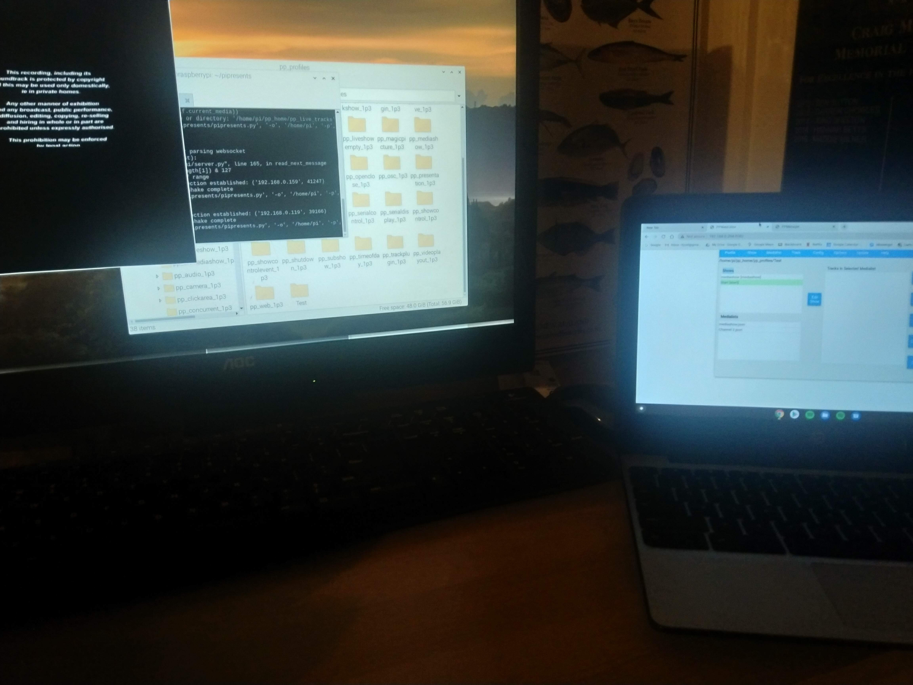
After two days of tinkering with PiPresents, I had it to my liking. Adding videos is really easy, it’s a lot faster and my buttons work consistently. The only slight hitch is that I can only change channels in one direction, but seeing as there’s only 3 channels its not too much of an issue, once you go over 3 it goes back to 1 anyway.
I could put more time into making it work but unfortunately its time I don’t really have at the moment. I may come back to it later but its not a high priority currently.
With the tech working to my liking (ahead of schedule as well) , I’m ready to move onto the next section of the project: hardware and media.
This will be easier to do once I’m back on city campus so I’ll take the next few days to work on other projects as well as resting up for what will hopefully be an energetic and successful final half-semester.
4/10/2020
I began the second half of the semester by beginning to seriously collecting media. I found a way to pull videos off NZOnScreen, which became a really useful source of media as well as discovering clips and important moments in NZ TV history.
I also started to pull ads, tv channel indents and various other clips off YouTube (there are whole channels dedicated to ads and obscure other clips).
I kept track of my collected clips in my notebook:

I set up a workstation in studio using one of the large TVs we have available and managed to get it working, much to the entertainment of the other students and staff.
I began observing peoples reactions to the installation, most people reacting with excitement and joy at seeing things they hadn’t seen in a long time. Some students even began discussing “buried memories” and how they had been unlocked whilst observing the project, which is a really good sign that the project both works, and is concise enough to have its desired effect.
We also had a quick critique with fellow students, which went really well. The other students, and our TA Claudine were really impressed with what I had managed to achieve.
With enough sample media to reliably test the installation, my next task was to get my hardware ready. This is where things start going a bit wrong. My previous assumption was that opshops in Auckland central would be crawling with old TVs. I was wrong.
I really struggled, and am still struggling with finding one. I’ve made my search public, reaching out to Creative Technology communities in and staff/fellow students, but no luck.
I am currently looking through Facebook marketplace and Trade-Me, and having a bit of success. If I don’t manage to find one soon I have several contingencies. One is to avoid hacking the TV, and use one that I own.
Instead, I could hack a TV remote and run some cables into the Pi itself.
Another contingency is to use a computer monitor, and build a casing out of whatever I like. I really like these ideas – they’re very “creative tech”.
I would also be able to demonstrate my improvisation skills and my ability to adapt a project when presented with a problem.
I’ll give myself a week to keep searching, then fall back on a contingency. To facilitate the extra time I might need I’ve decided to fast track my other projects, so I can focus all my energy on Studio.
9/10/2020
I managed to find a cheap TV on Facebook marketplace.
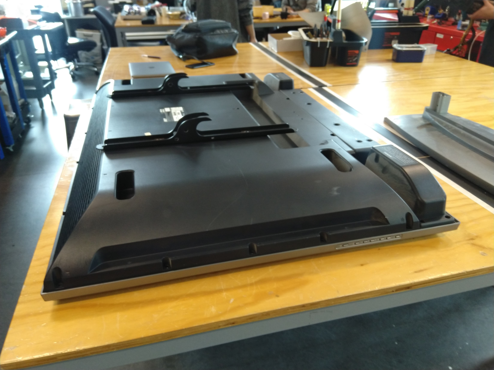
It has some dead lines, but I don’t mind too much, it almost adds to the project. If nothing else, it creates a distressed look.
I brought it in on Monday, and spent Wednesday taking it apart to access the tactile buttons on the side. I could write a lot about what exactly went wrong here, but basically I was unable to hack the buttons while still retaining some control over the TV itself, turning it on etc.
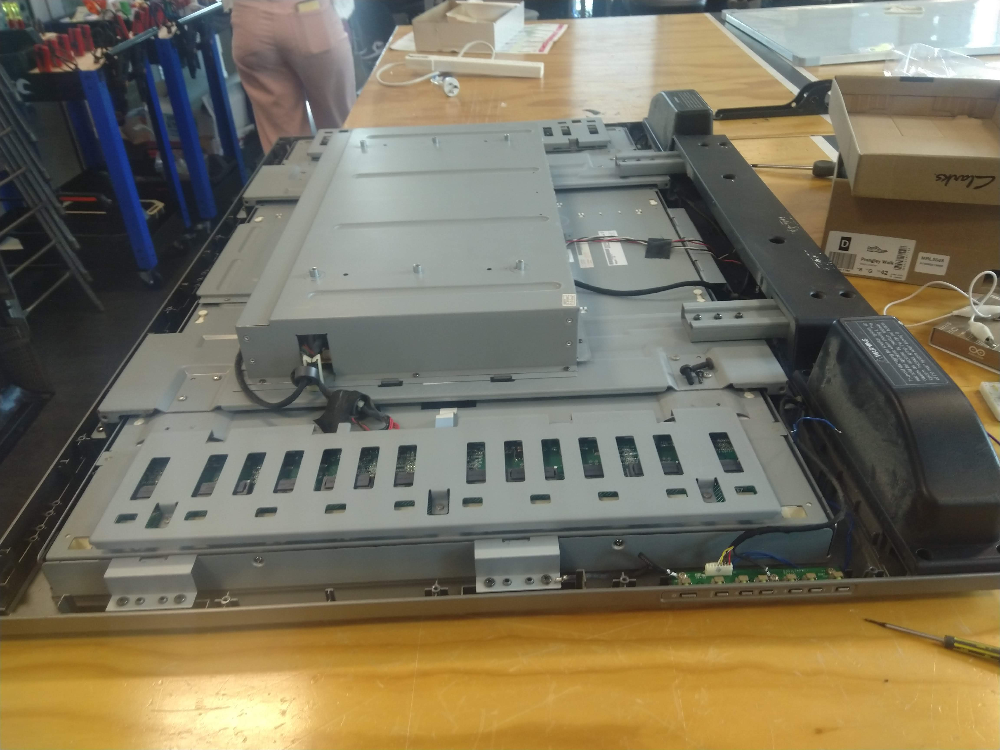
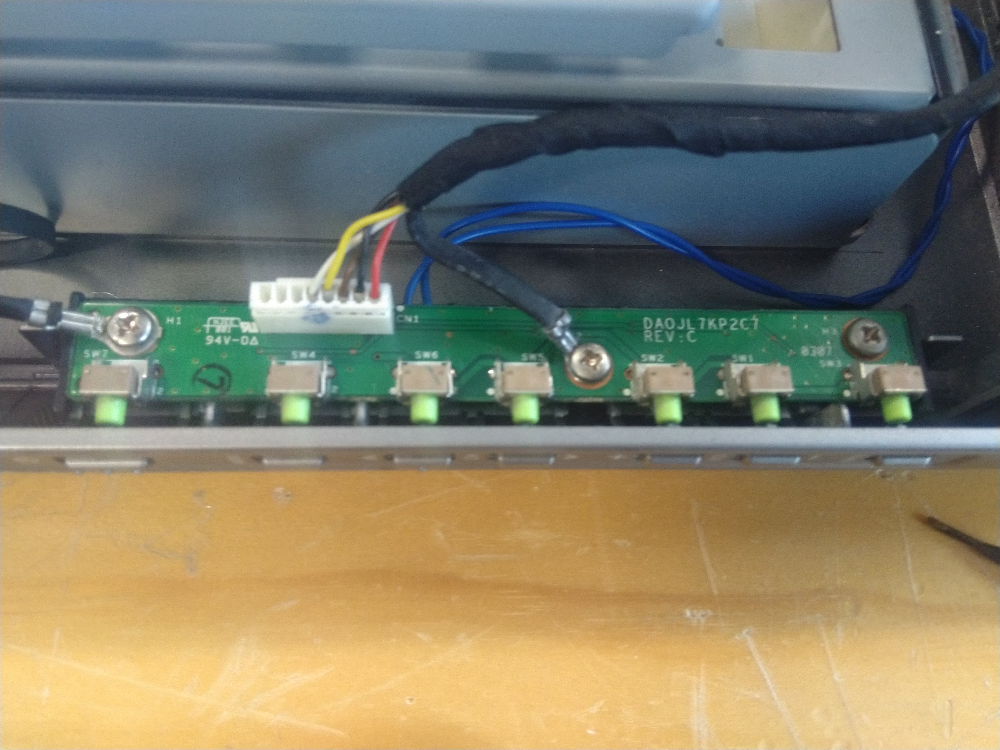
I spent all day on this and ended by deciding to fall back on a contingency. I’ve opted to build a small laser-cut box and place three buttons on it (Channel, Up and Down). Boxes are easy to make with access to a laser cutter so I set about making a vector file. I also found some nice wood offcuts in the mech lab.
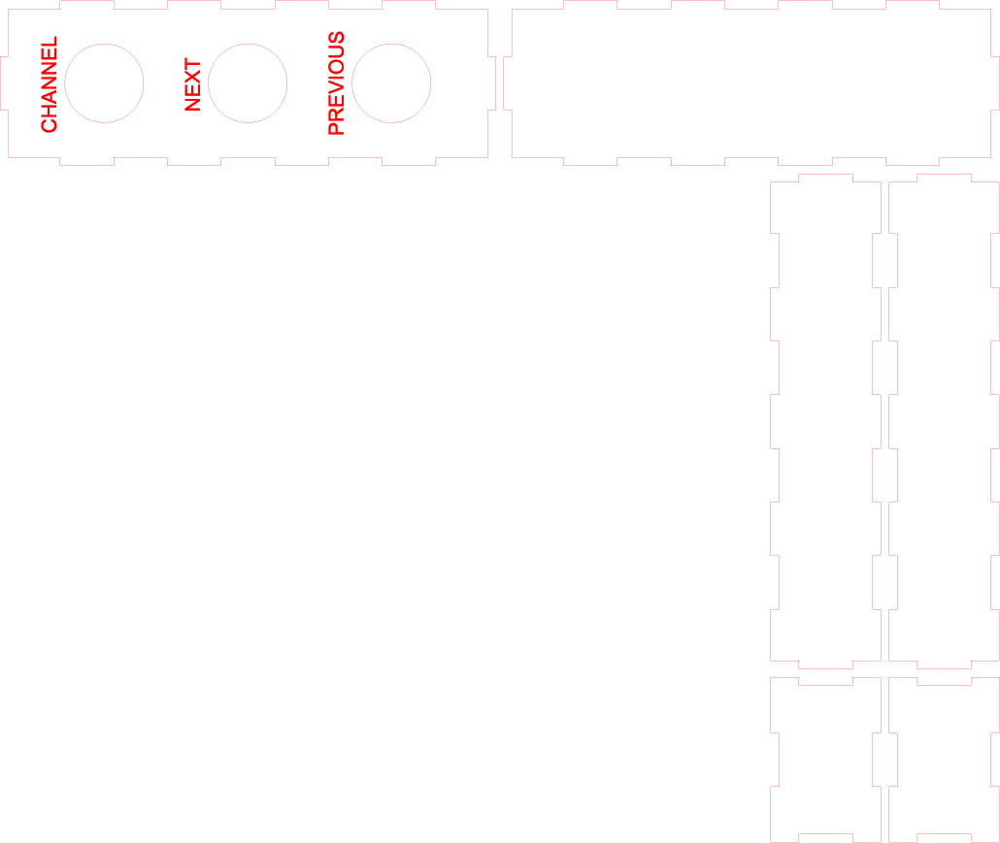
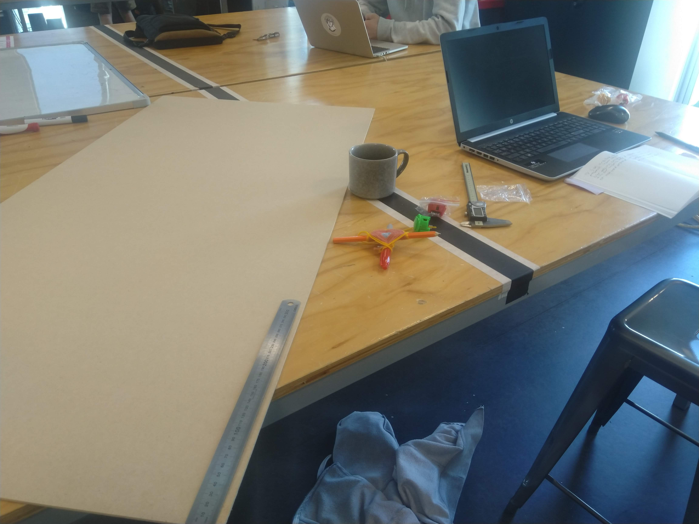

I’ll experiment with dimensions and build some mock-ups over the weekend and also work on the design of the box, but I’m hoping to have it built on Monday and work on the electronics on Tuesday/Wednesday, then spend the rest of the time until submission collecting content and working on documentation.
This is a hitch, but ultimately is for the best. The buttons were small, and you had to walk up to the TV to use it, not exactly user-friendly, especially if they’re sitting down. I plan on using arcade style buttons which invite the user to press them, mess around, and surf through the channels.
22/10/2020
Over the weekend after the last post I created a mockup of the remote control in the dimensions I specified while making the vector diagram.
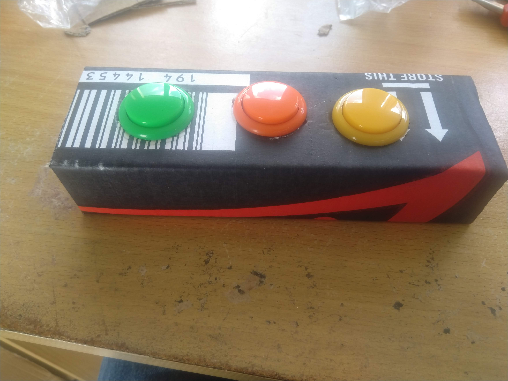
I found the mockup to be too large too hold comfortably while pressing all the buttons, so I reduced the length and the distance between the buttons, and made a new vector diagram.
On Monday I headed to the 3D labs to get the MDF laser-cut. We cut it once, and noted that the tolerance of the tooth joints was too low making the box very loose. I cut it again with a different tolerance and the box slotted together without falling apart.
I headed back to studio and put the arcade buttons into the holes with some minor cuts.
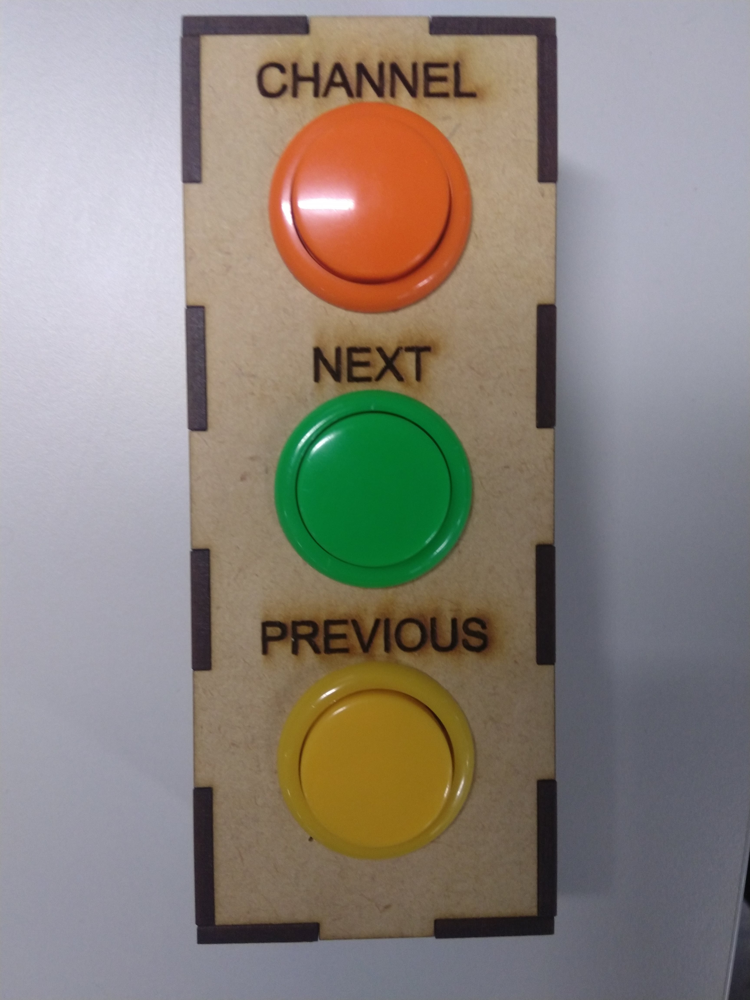
As I was working on putting the buttons in, I was talking to our TA Claudine about how I would connect the remote to the TV. She asked if I was going to use Infrared signals to control the chennels etc. I had initially rejected the idea as I was under the impression that the software I was using didn’t support IR recievers. However, on the bus home I devised a method to send and receive IR signals and then just put a voltage into the RPi GPIO pins, just like closing a switch. The setup would require two Arduinos, which I had, and an IR blaster/receiver setup which I had used for a previous project.
I drew up a circuit diagram on the bus on Wednesday.
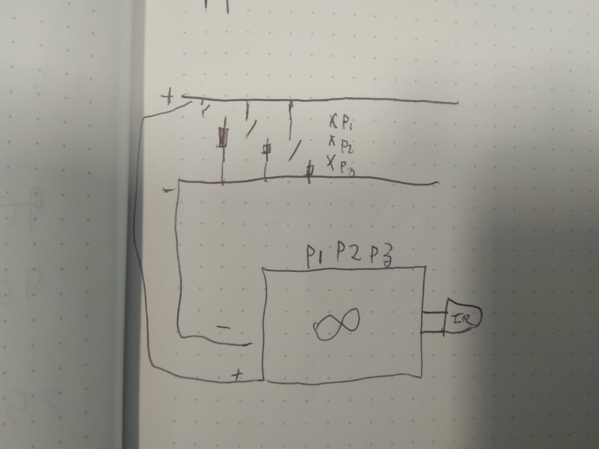
I spent the next two days putting everything together and actually even managed to hack the pre-existing IR receiver on the TV., as well as drilling holes into the TV casing so I could mount the RPi and Arduino.
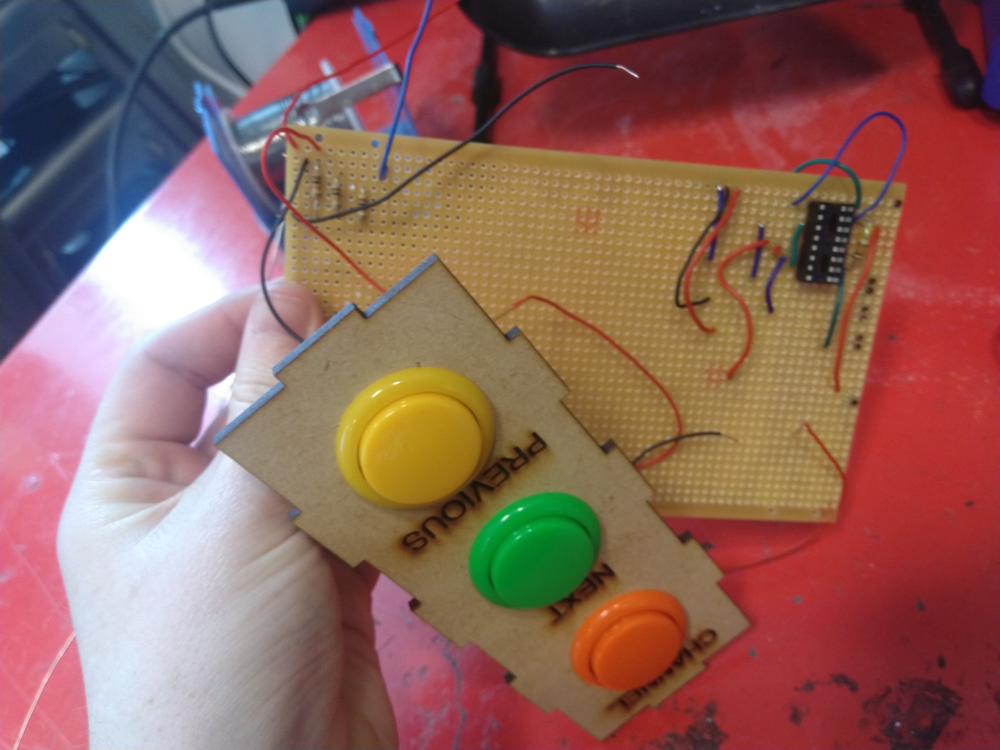
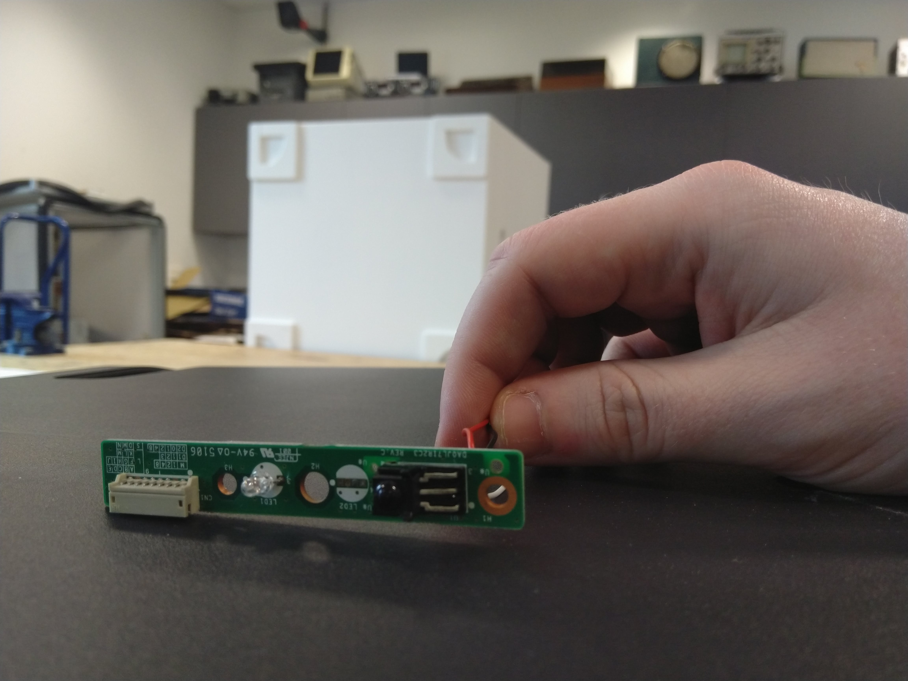
I now had a setup which directly incorporated parts from the TV, and also had tactile, labelled buttons which were easy to use and had an obvious function. The traditional act of controlling the TV with a remote also adds to the experience. I consider this method of control to be the ‘silver bullet’ solution, and it only came into existence through iteration and tinkering with ideas, failing and problem-solving.
The setup as is follows:
- Button is pressed, sends signal to Arduino in the remote.
- Arduino sends corresponding IR signal to the IR receiver in the TV.
- Reciever sends IR signal to Arduino on the TV, which decodes it and sends a signal to the corresponding GPIO pin on the RPi, which controls the PiPresents software.
I then spent a day mounting everything on the back of the TV properly, including a multiboard so I can turn everything on and off with one switch. This also makes the installation more safe as there are less cables lying around causing trip hazards.
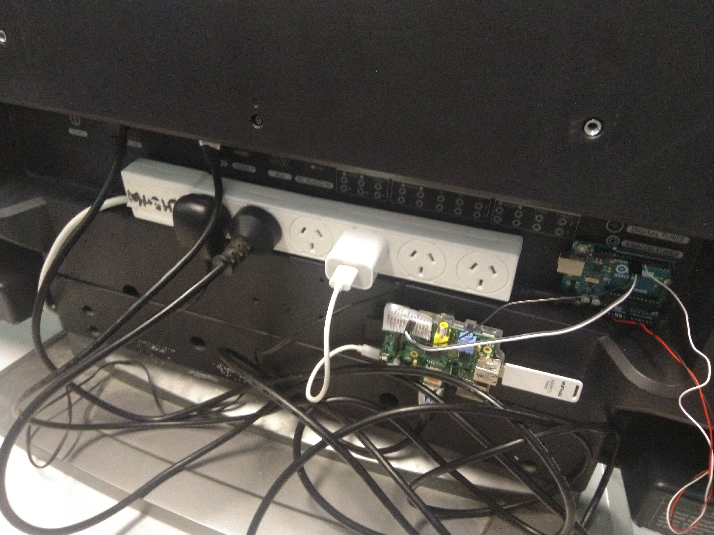
I am now finished with the physical part of the installation and am now going to work on what my project is fundamentally about, finding old media and re-exposing it. I'm combing through online archives and having conversations with my peers about what they do and don’t remember from NZ TV. Im finding some interesting stuff, like Santa Claus arriving at the 1985 Santa Parade via helicopter.